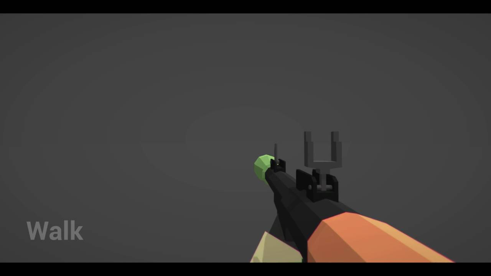

Zyie
Hi,
I’m new to Urho and I’m trying to creating an FPS game and i was wondering if anyone knows how you make the gun stay pointing towards the center of the screen when you rotate the camera node.

This is what I’m looking to do
if anyone can help it would be greatly appreciated.